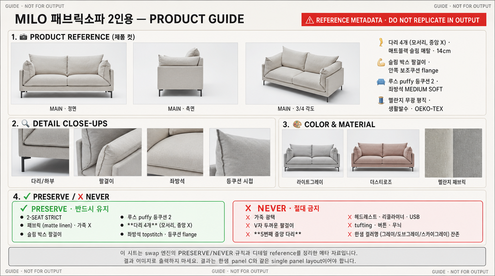

공정 설정 템플릿 #1 sofa · MVME 키안티 천연가죽 리클라이너 4인 GPT image · 4-layer + bidirectional QA 실행 완료 · v13 ▾





MVME 키안티 천연가죽
리클라이너 4인
사람의 몸이 갖고 있는 자연스러운 비례감을
고려한 디자인으로 편안함과 아름다움을
모두 선사하는 소파입니다.
언제든 손쉽게 최적의 편안함을 누려보세요.
밀로 패브릭소파
2인용
사람의 몸이 갖고 있는 자연스러운 비례감을
고려한 디자인으로 편안함과 아름다움을
모두 선사하는 소파입니다.
어느 공간에서도 손쉽게 포근함을 누려보세요.

사람의 몸을 가장 잘 아는 소파
앉았을 때 허리와 머리를 자연스럽게 받쳐줄 수 있도록
인체의 비율을 고려해 디자인된 제품으로
편안함은 물론 아름다운 비례감을 제공합니다.
부드러운 곡선 형태의 팔걸이는
머리를 받치기에도 팔을 올리기에도 적당한 높이로
디자인되어 안락함을 줍니다.

사람의 몸을 가장 잘 아는 소파
앉았을 때 허리와 등을 자연스럽게 받쳐줄 수 있도록
인체의 비율을 고려해 디자인된 제품으로
편안함은 물론 아름다운 비례감을 제공합니다.
부드러운 곡선 형태의 팔걸이는
팔을 올리기에도 기대기에도 적당한 높이로
디자인되어 안락함을 줍니다.

어느 각도에서 보아도 고급스러운 다릿발
유려한 곡선과 절제된 직선이 조화로운 다릿발은
소파의 고급스러운 실루엣을 완성해 줍니다.

어느 각도에서 보아도 세련된 메탈 다리
슬림한 메탈과 절제된 직선이 조화로운 다릿발은
소파의 모던한 실루엣을 완성해 줍니다.

절개선은 최소화, 가죽의 매력은 극대화
모던하고 깔끔한 절개선으로 가죽의 넓은 면을
최대한 활용하여 천연가죽의 매력을 그대로 살렸습니다.

섬세한 스티치, 패브릭의 매력은 극대화
모던하고 깔끔한 스티치로 패브릭의 넓은 면을
최대한 살려 패브릭 특유의 포근함을 그대로 담았습니다.


어떤 자세든 유연하게
맞춰주는 리클라이닝
한샘의 오랜 노하우를 담은 AERO-MOTION 기능은
일반적인 롤러형과 달리
유연한 관절처럼 부드러운 움직임으로
자연스럽고 편안한 자세 변화를 도와줍니다.
포근한 오리털 쿠션감
덕페더(오리털 67%)와 마이크로화이버가 조화된 쿠션으로, 몸을 감싸는 포근함을 느껴보세요.
포근함을 더하는
덕페더 쿠션감
67% 덕페더와 33% 마이크로화이버가
풍성하게 채워진 등쿠션으로
앉는 순간 몸을 부드럽게 감싸줍니다.
미디엄 소프트 좌방석과 소프트 등쿠션의 조화로

가장 편안한 자세를 기억해 주는
메모리 시스템
가장 편안함을 느끼는 각도를
버튼 하나로 손쉽게 저장할 수 있습니다.
최대 2가지 옵션까지 저장 가능하며,
언제든지 초기화도 가능합니다.
넉넉한 등쿠션의 편안함
오리털과 마이크로화이버가 풍성하게 채워진 등쿠션이 머리부터 허리까지 부드럽게 받쳐줍니다.
오랜 시간에도 편안함이 지속됩니다.
32kg 고밀도 통스펀지로
탄탄한 착석감을 더했습니다.
생활발수 폴리니크 패브릭으로
오염 걱정 없이 관리가 쉽습니다.
OEKO-TEX, FITI, EO 인증으로

전자기기를 편하게 사용할 수 있는
USB 충전 포트
양쪽 팔걸이 바깥쪽 스위치에 USB 충전 포트가 있어,
소파에서도 디지털 기기를 편리하게
충전하여 사용할 수 있습니다.
심플한 디자인, 생활에 집중
불필요한 기능을 덜어내고, 오롯이 휴식에 집중할 수 있는 미니멀한 디자인을 완성했습니다.
안심하고 사용할 수 있습니다.
튼튼한 EO 등급 건조목 프레임과
S자 스프링 구조로
오랜 시간에도 변형 없이
안정감 있게 사용하실 수 있습니다.

다양한 각도의
전동 헤드레스트
독서 및 TV, 스마트폰 사용, 휴식 등 다양한 활동을
최적의 자세로 즐길 수 있도록 전동 헤드레스트의
세심한 각도 조절이 가능합니다.

다양한 각도의
슬림한 프로필
모던한 공간, 아늑한 거실 등
어떤 인테리어에도 자연스럽게 어울리는
슬림하고 세련된 디자인입니다.

두 다리 쭉 뻗어도 걱정 없는 발받침
리클라이닝 기능 작동 시,
숨겨져 있던 발받침이 길게 뻗어 나와
발목까지 편안하게 받쳐줍니다.
생활발수 기능성 패브릭
폴리니크 패브릭으로 물과 오염에 강해, 일상에서 더욱 편하게 사용할 수 있습니다.
생활방수 패브릭으로
일상 오염에도
쉽게 관리할 수 있습니다.
부드러운 촉감과 내구성을

MADE IN ITALY
이태리에서 100% 생산 공정이 이루어지는
펠레밀라노사의 천연가죽을 사용하여 만들어집니다.
엄격한 관리 기준과 장인들의 노하우로 생산되어
이태리 가죽 특유의 깊이 있는 컬러와 텍스처를
그대로 구현했습니다.
뛰어난 내구성은 물론, 촉촉하고 부드러운
터치감을 자랑합니다.

자랑하는 패브릭
폴리니크 패브릭은 생활발수 기능과
OEKO-TEX 인증을 받은 안전한 소재입니다.
부드러운 촉감과 고급스러운 텍스처로
오랜 시간에도 쾌적함을 유지합니다.
내구성이 뛰어나며,
포근하고 산뜻한 터치감을 느낄 수 있습니다.
매일을 더욱 특별하게 만들어주는

세월을 견디는 뛰어난 내구성
가죽이 마모를 잘 견딜 수 있는지,
유해하지는 않은지, 한샘만의 엄격한 품질 테스트로
가죽의 내구성과 유해성을 철저하게 검증하여
오랫동안 안심하고 사용할 수 있습니다.
* 가죽 내마모성 테스트 통과
* 천연가죽 유해성 테스트 통과
* 폼알데하이드, 아릴아민, PFC 등 유해물질 함유량에 대해 안전기준 적합 판정
안심하고 사용하는 소파
KS 품질 관리 기준 및 한샘 테스트를 모두 통과한
제품과 E0 등급의 안전한 자재를 사용하여
가족 구성원 모두가 안심하고 사용할 수 있습니다.
고밀도 스펀지와 오리털의 조화
32kg 고밀도 통스펀지와 오리털, 마이크로화이버가 어우러져 탄탄함과 포근함을 동시에 제공합니다.
세월을 견디는 뛰어난 내구성
패브릭과 내장재 모두
엄격한 품질 테스트를 거쳐
내구성과 안전성을 꼼꼼하게 검증했습니다.
오랫동안 안심하고 사용할 수 있습니다.
* 생활발수 테스트 통과
* OEKO-TEX, FITI, EO 인증
* 폼알데하이드 등 유해물질 안전기준 적합 판정
안심하고 사용하는 소파
KS 품질 관리 기준 및 안전 테스트를 모두 통과한
제품과 EO 등급의 안전한 자재를 사용하여
가족 구성원 모두가 안심하고 사용할 수 있습니다.